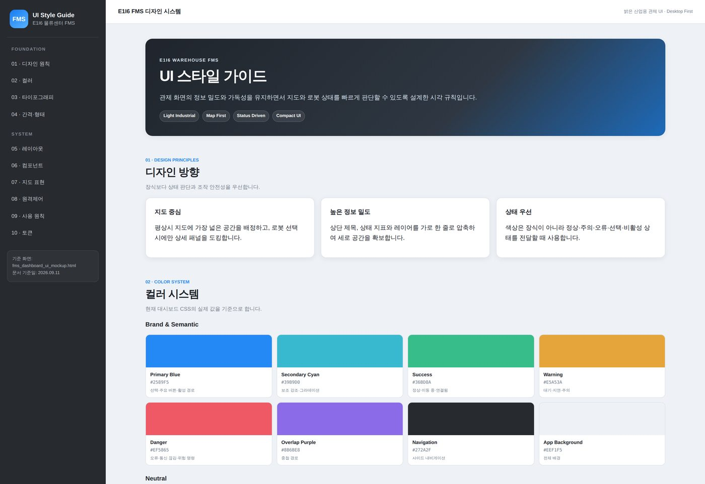

01 · LOGISTICS FMS
진행 중
팀 7명 · ACS 관제 담당 2인
다중 로봇의 이동 명령과 상태를 연결하는 관제
TurtleBot 기반 물류 시스템에서 관제(FMS) 쪽을 맡아, 목적지 선택 · 정지 · 수동 주행을 관제 화면의 조작 흐름으로 구성했습니다.
담당 업무
FMS 관제 프로그램과 화면 설계
시스템 구성
ROS 2 Jazzy / Nav2 로봇 → Zenoh 상태 전달
FastAPI / PostgreSQL → React / Vite 관제 화면
구현한 기능
GeoJSON 노드 조회
노드 · 좌표 Nav2 Goal
Robot Stop
cmd_vel 수동 주행
대시보드 WebSocket
모의 로봇 시뮬레이터 검증
지도 중심 관제 화면의 설계 기준
판단에 필요한 정보부터 배치
지도에 가장 넓은 영역을 배정하고, 로봇 선택 시 상세 패널을 표시합니다.
색상과 정보 밀도에 공통 규칙 적용
정상 · 주의 · 오류 · 선택 상태를 구분하고, 지표와 레이어 조작은 한 줄로 정리했습니다.
현재 단계명령 전송 · 상태 수집 구현
연동 중실제 위치 · 일부 배차 화면 연동 중
계획LLM / VLM 활용은 계획 단계
지도 마커는 현재 데모 좌표를 사용합니다.
